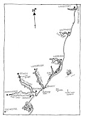
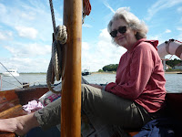
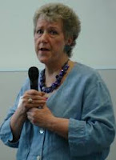
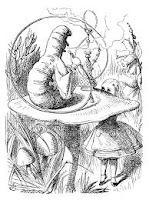
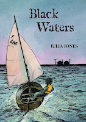
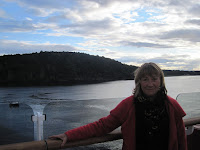

| Peter Duck and me in Felixstowe |
{kind=link}
I was passing a traffic lights where
there were two primary school girls waiting. My car window was open
and I heard what they said. "Oh, it's the orfer!" I waved like crazy and they waved back. You can keep your red carpet and your
paparazzi, popping flash-bulbs and I really can't be bothered with a paving slab in the
Hollywood Walk of Fame. To be identified as an author by a couple of
Felixstowe primary school kids (who almost certainly won't have read my books) made me deeply, deeply happy.
It happened last year as well. I was
walking to Felixstowe Library to help give out the medals for the
summer reading challenge and there were three or four children playing in a
street nearby. No chance they were going to be getting a certificate for
reading their six books over the summer holiday but still I heard
them say, “That's Julia Jones. She's an Orfer. She came to our
school.” That was what had mattered, nothing to do with me or with my specific books. My day in their school had confirmed that books are written by people, quite ordinary people. Maybe they could do it themselves, if they chose.Meanwhile they were happy as they were.
 | |||
| Suffolk coast by Claudia Myatt |
I went on to the library. I handed out
the certificates and I loved and admired the children who had were
there with their parents / carers / grandparents waiting bright-eyed
for their names to be called. It was especially good when I
recognised several of the children from the schools where I'd worked. Yet it was that moment in the street that left me with the special memory. It made me feel part of something that was bigger than myself -- the community of writers.
Felixstowe (translating literally as
this happy place) is a town on the Suffolk coast that stretches
between the astounding realities of global commerce at the Port of Felixstowe (River Orwell) end to the delightfully dilapidated collection of
shacks, houseboats and history that comprises Felixstowe Ferry at the
entrance to the River Deben. For the last two years I've enjoyed the
fantastic privilege of being invited into most of the local primary schools to run writing workshops and talk about 'being an author'. And I've also been allowed on the platform at the official book festival (June 27th-28th)
 | ||
| Author Pippa Lewis & Peter Duck at last year's festival |
{kind=link}
 |
| Linda Gillard talking about self-publishing |
{kind=link}
 |
| Wonderland |
{kind=link}
When I visit primary schools
I always spend lunchtimes in the library and ask the teachers to tell
the children that anyone who wants to come and chat about their own
writing will be welcome.I sit there for a while eating my
sandwiches like Nobby No-Mates and sooner or later the children come.
Generally they are the older ones but there's always at least one or two tinies. Sometimes they’re writing with a friend; more
usually they have a notebook at home which they treat as strictly secret. Some are embarked on wildly ambitious projects – epic
sagas or extended pieces of fan fiction, others admit to a few short
stories or a newly started diary or to never quite finishing
anything. They are simultaneously honest -- and gloriously aspirational. Sometimes the writing talent is already evident: other times
the dream hasn’t yet made it into words. I was like that when I was
a child. My private efforts meant so much in my imagination but I
achieved so little on paper. It wouldn’t have done me any favours
at all if any of this work had been dragged out from faded green
notebook and set against the more articulate, better organised efforts of others.
{kind=link}
Fortunately I don’t think the Felixstowe
competition will trespass into these sensitive areas. The arrangement has been that the work
has been done in the schools and it’s up to the teachers to select
pieces of work to send on for the external judging. I'm guessing thet that real celebrations will have happened in-house, with pupils sharing their work in class at the end of a session
or in show-and-tell assemblies where participation is voluntary.
I’ve noticed skilful teachers seizing the opportunity to put
forward children who have responded unexpectedly well in the writing workshops. It’s a rare day if someone doesn’t say in tones
of surprise “Oh s/he never normally writes as much as that” -- when often it’s a very few sentences indeed.
Children can be so heart-tugging –
the bereaved little girl who wrote a story about her mother coming back in a
dream, the boy who described a secret place in the woods where he and
his estranged dad would both be together, fishing and camping, and no one would
be able to see them or find them; the children whose "wonderlands" turn
out to be the distant countries where their grandparents and the
other members of their families still live. They can also be so funny
and friendly and affirmative. One shy lad – perhaps on the
high-functioning autistic spectrum – explained to me that his
letters “wouldn’t join up any more” then allowed me to read
neatly-printed pages of the most original and wryly humorous fantasy writing that
I’ve ever had the opportunity to enjoy. It won't be eligible for the competition but I long to fast-forward
another ten years or so and discover that this talent has been his
route to success.
 |
| ready for the FBF, I hope |
{kind=link}
I do hope that the Festival organisers (unpaid volunteers) and the sponsors and the teachers realise what a worthwhile initiative this has been. I’d also like to say from my own point of view that it’s absorbingly interesting to be allowed to work with children from so many different nationalities and with such varied abilities and problems and personalities. There are five child characters in my forthcoming novel, Black Waters (set in Essex, not Suffolk) and each of them has been suggested by someone I’ve met on a school visit somewhere (not necessarily Felixstowe). I don't think I'm infringing the privacy of the children. It's part of the same process by which any character is created, just a flash of a personality trait, never a total portrait.
I find school visits challenging and exhausting and restorative and hugely stimulating. The next time I see a couple of kids waiting at a traffic lights I’ll probably whoop with delight and say “Ooh look, it’s a Ninspiration!”
 | |
| Anna Bentinck, voice actress, coming to the FBF this year |
{kind=link}